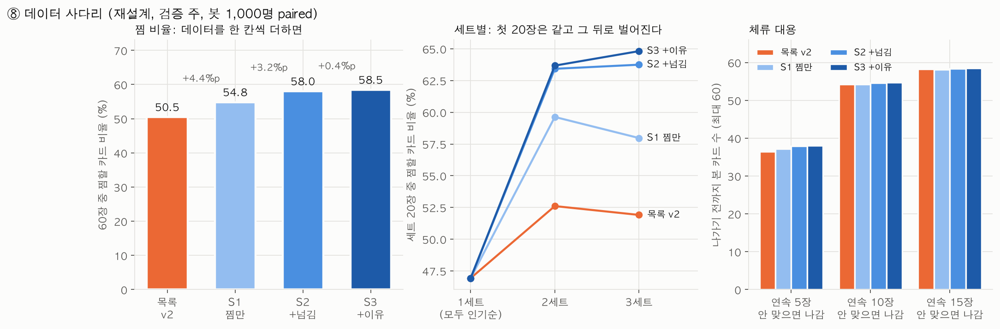

<title>스와이프 데이터 사다리</title>
<meta name="claude:viewport-fit-sides" content="cover">
<link rel="stylesheet" href="https://fonts.googleapis.com/css2?family=IBM+Plex+Sans+KR:wght@400;500;700&family=IBM+Plex+Mono:wght@500&display=swap">
<style>
/* 레이아웃: 결과 보고서(report.html)와 같은 체계. 질문 → 고정 조건 → 세션 흐름 → 사다리 → 지표 → 판정 → 읽는 법 → 일정 */
:root {
  --bg: #f7f8fa; --paper: #ffffff; --fg: #14171c; --fg2: #4f5662; --line: #e1e4ea;
  --swipe: #2a78d6; --list: #d4572a; --tie: #7a808a;
  --swipe-bg: #e6f0fc; --list-bg: #fbeae3; --tie-bg: #eef0f3; --popslot: #d5d9e0;
  --s1: #93bdf0; --s2: #4a8fe0; --s3: #1d5aa8;
  --sans: "IBM Plex Sans KR", "Apple SD Gothic Neo", "Malgun Gothic", sans-serif;
  --mono: "IBM Plex Mono", ui-monospace, Menlo, monospace;
}
@media (prefers-color-scheme: dark) { :root:not([data-theme="light"]) {
  --bg: #121418; --paper: #1a1d22; --fg: #eceef2; --fg2: #a7adb8; --line: #2c3038;
  --swipe: #5b9ef0; --list: #ef7c50; --tie: #9aa0aa;
  --swipe-bg: #1b2b40; --list-bg: #3a2218; --tie-bg: #262a31; --popslot: #3a3f48;
  --s1: #3f6ca6; --s2: #5b9ef0; --s3: #b0d2fa; color-scheme: dark } }
:root[data-theme="dark"] {
  --bg: #121418; --paper: #1a1d22; --fg: #eceef2; --fg2: #a7adb8; --line: #2c3038;
  --swipe: #5b9ef0; --list: #ef7c50; --tie: #9aa0aa;
  --swipe-bg: #1b2b40; --list-bg: #3a2218; --tie-bg: #262a31; --popslot: #3a3f48;
  --s1: #3f6ca6; --s2: #5b9ef0; --s3: #b0d2fa; color-scheme: dark }

body { background: var(--bg); color: var(--fg); font-family: var(--sans); font-size: 16px; line-height: 1.7;
  padding-left: max(16px, env(safe-area-inset-left, 0px)); padding-right: max(16px, env(safe-area-inset-right, 0px)); padding-block: 2.5rem 4rem; }
main { max-width: 60rem; margin: 0 auto; display: grid; gap: 3.5rem; }
.prose { max-width: 44rem; }
h1, h2, h3 { text-wrap: balance; line-height: 1.3; margin: 0; }
h1 { font-size: clamp(1.6rem, 4vw, 2.3rem); font-weight: 700; letter-spacing: -0.01em; }
h2 { font-size: 1.4rem; font-weight: 700; }
h3 { font-size: 1.05rem; font-weight: 700; }
p { margin: 0; }
section { display: grid; gap: 1.25rem; }
.eyebrow { font-size: 0.8rem; letter-spacing: 0.06em; color: var(--fg2); font-weight: 500; }
.lede { font-size: 1.15rem; }
.muted { color: var(--fg2); font-size: 0.92rem; }
.num { font-family: var(--mono); font-variant-numeric: tabular-nums; }
.s { color: var(--swipe); font-weight: 700; } .l { color: var(--list); font-weight: 700; }
code { font-family: var(--mono); font-size: 0.85em; background: var(--tie-bg); padding: 0.1em 0.35em; border-radius: 4px; }
ul, ol { margin: 0; padding-left: 1.2rem; display: grid; gap: 0.4rem; }
header { display: grid; gap: 1rem; }
.notice { border: 1px solid var(--line); background: var(--paper); border-radius: 8px; padding: 0.7rem 1rem; font-size: 0.92rem; color: var(--fg2); }

/* 바뀌는 점 */
.swap { display: grid; grid-template-columns: repeat(auto-fit, minmax(16rem, 1fr)); gap: 1rem; }
.box { background: var(--paper); border: 1px solid var(--line); border-radius: 10px; padding: 1rem 1.2rem; display: grid; gap: 0.5rem; align-content: start; min-width: 0; }
.box .tag { font-size: 0.78rem; font-weight: 700; letter-spacing: 0.04em; color: var(--fg2); }
.box.now { border-color: var(--swipe); }
.box.now .tag { color: var(--swipe); }

/* 고정 조건 */
.fixed { display: grid; grid-template-columns: repeat(auto-fit, minmax(13rem, 1fr)); gap: 0.6rem 1.5rem; padding: 0; list-style: none; }
.fixed li { border-top: 1px solid var(--line); padding-top: 0.5rem; display: grid; gap: 0.1rem; }
.fixed b { font-weight: 500; font-size: 0.85rem; color: var(--fg2); }

/* 슬롯 그림 */
.slots { background: var(--paper); border: 1px solid var(--line); border-radius: 10px; padding: 1.1rem 1.2rem; display: grid; gap: 1.1rem; overflow-x: auto; }
.slotrow { display: grid; grid-template-columns: 6.5rem repeat(3, max-content); gap: 0.4rem 1.2rem; align-items: center; }
.slotrow .who { font-weight: 700; font-size: 0.95rem; }
.slothead { font-size: 0.8rem; color: var(--fg2); }
.grid20 { display: grid; grid-template-columns: repeat(10, 0.95rem); gap: 3px; }
.sq { width: 0.95rem; height: 0.95rem; border-radius: 3px; background: var(--popslot); }
.sq.p { background: var(--swipe); }
.legend { display: flex; flex-wrap: wrap; gap: 0.4rem 1.2rem; font-size: 0.85rem; color: var(--fg2); align-items: center; }
.legend span { display: inline-flex; align-items: center; gap: 0.4rem; }
.legend .sq { display: inline-block; }

/* 봇 판단 흐름 */
.flow { display: flex; flex-wrap: wrap; gap: 0.5rem; align-items: stretch; }
.step { background: var(--paper); border: 1px solid var(--line); border-radius: 8px; padding: 0.55rem 0.8rem; font-size: 0.92rem; display: grid; gap: 0.1rem; min-width: 0; flex: 1 1 9rem; }
.step small { color: var(--fg2); font-size: 0.8rem; }
.step.like { border-color: var(--swipe); background: var(--swipe-bg); }

/* 사다리 */
.ladder { display: grid; gap: 0.6rem; }
.rung { display: grid; grid-template-columns: 5.5rem 1fr; gap: 0 1rem; background: var(--paper); border: 1px solid var(--line); border-radius: 10px; padding: 0.9rem 1.1rem; align-items: start; }
.rung .id { font-family: var(--mono); font-size: 1.15rem; font-weight: 500; display: grid; gap: 0.15rem; }
.rung .id small { font-family: var(--sans); font-size: 0.75rem; color: var(--fg2); font-weight: 500; }
.rung .body { display: grid; gap: 0.45rem; min-width: 0; }
.rung .q { font-weight: 700; }
.sig { display: flex; flex-wrap: wrap; gap: 0.35rem; }
.pill { font-size: 0.8rem; padding: 0.05rem 0.6rem; border-radius: 99px; border: 1px solid var(--line); color: var(--fg2); white-space: nowrap; }
.pill.on { background: var(--swipe-bg); border-color: transparent; color: var(--swipe); font-weight: 700; }
.pill.off { text-decoration: line-through; opacity: 0.7; }
.rung.base { border-left: 4px solid var(--list); }
.rung.r1 { border-left: 4px solid var(--s1); }
.rung.r2 { border-left: 4px solid var(--s2); }
.rung.r3 { border-left: 4px solid var(--s3); }
.rung.app { border-style: dashed; }
.delta { font-size: 0.88rem; color: var(--fg2); }
.delta b { color: var(--fg); font-weight: 700; }

.tablewrap { overflow-x: auto; background: var(--paper); border: 1px solid var(--line); border-radius: 10px; }
table { border-collapse: collapse; width: 100%; font-size: 0.93rem; }
th, td { padding: 0.6rem 0.85rem; text-align: left; border-bottom: 1px solid var(--line); vertical-align: top; }
tr:last-child td { border-bottom: 0; }
th { font-weight: 500; color: var(--fg2); font-size: 0.85rem; white-space: nowrap; }

/* 가설 그림 */
figure { margin: 0; display: grid; gap: 0.6rem; }
.frame { background: var(--paper); border: 1px solid var(--line); border-radius: 10px; padding: 0.75rem; overflow-x: auto; }
.frame svg { display: block; width: 100%; min-width: 30rem; height: auto; }
figcaption { font-size: 0.9rem; color: var(--fg2); max-width: 44rem; }
.frame img { display: block; width: 100%; height: auto; min-width: 40rem; border-radius: 6px; }
th.r, td.r { text-align: right; }

/* 지표 */
.metrics { display: grid; grid-template-columns: repeat(auto-fit, minmax(17rem, 1fr)); gap: 1rem; }
.metric { background: var(--paper); border: 1px solid var(--line); border-radius: 10px; padding: 1rem 1.2rem; display: grid; gap: 0.5rem; align-content: start; min-width: 0; }
.metric .rank { font-size: 0.78rem; font-weight: 700; letter-spacing: 0.04em; color: var(--fg2); }
.metric.main { border: 2px solid var(--swipe); }
.metric.main .rank { color: var(--swipe); }

/* 체류 예시 */
.strip { display: flex; flex-wrap: wrap; gap: 4px; align-items: center; }
.c { width: 1.6rem; height: 2.1rem; border-radius: 4px; display: grid; place-items: center; font-size: 0.8rem; font-weight: 700; border: 1px solid var(--line); background: var(--bg); color: var(--fg2); }
.c.h { background: var(--swipe-bg); color: var(--swipe); border-color: transparent; }
.c.run { border-color: var(--list); color: var(--list); }
.exit { font-size: 0.85rem; font-weight: 700; color: var(--list); padding-left: 0.4rem; }

.read { display: grid; gap: 0.6rem; }
.read div { display: grid; grid-template-columns: minmax(8rem, 12rem) 1fr; gap: 0.2rem 1rem; padding-bottom: 0.6rem; border-bottom: 1px solid var(--line); }
.read div:last-child { border-bottom: 0; }
.read b { font-family: var(--mono); font-weight: 500; }
@media (max-width: 34rem) { .read div { grid-template-columns: 1fr; } .rung { grid-template-columns: 1fr; gap: 0.4rem; } }

footer { border-top: 1px solid var(--line); padding-top: 1.25rem; font-size: 0.88rem; color: var(--fg2); display: grid; gap: 0.4rem; }
</style>

<main>
  <header class="prose">
    <p class="eyebrow">실험 재설계 (안) · 2026-11-27 · 검증 주 기준</p>
    <h1>스와이프가 모으는 데이터는 찜 비율을 얼마나 올리나</h1>
    <p class="lede">목록형과 스와이프형 둘 다 <b>인기 상품으로 시작</b>합니다. 스와이프는 카드를 넘길 때마다 "싫어요" 쪽 데이터(넘김과 이유 3가지)를 더 모읍니다. 이 데이터를 <b>한 칸씩 더해 가며</b> 찜 비율이 얼마나 오르는지 잽니다.</p>
    <p class="notice">11-27에 돌렸습니다(검증 주, 메인 1,000명 + 다른 고객 7묶음). 바로 아래가 결과이고, 그 아래는 설계 설명입니다. 설계 부분의 가설 그림과 체류 예시는 실제 결과가 아닙니다.</p>
  </header>

  <section>
    <h2>결과</h2>
    <div class="tablewrap">
      <table>
        <thead><tr><th>찜 비율</th><th class="r">목록 v2</th><th class="r">S1 찜만</th><th class="r">S2 +넘김</th><th class="r">S3 +이유</th></tr></thead>
        <tbody>
          <tr><td><b>60장 전체</b></td><td class="r num">50.5%</td><td class="r num">54.8%</td><td class="r num">58.0%</td><td class="r num"><b>58.5%</b></td></tr>
          <tr><td>1세트 (모두 인기순)</td><td class="r num">46.9%</td><td class="r num">46.9%</td><td class="r num">46.9%</td><td class="r num">46.9%</td></tr>
          <tr><td>2세트</td><td class="r num">52.6%</td><td class="r num">59.6%</td><td class="r num">63.4%</td><td class="r num">63.7%</td></tr>
          <tr><td>3세트</td><td class="r num">51.9%</td><td class="r num">58.0%</td><td class="r num">63.7%</td><td class="r num">64.8%</td></tr>
          <tr><td>최종 추천 20개 중 찜할 옷</td><td class="r num">14.4</td><td class="r num">14.3</td><td class="r num">18.2</td><td class="r num">18.1</td></tr>
        </tbody>
      </table>
    </div>
    <div class="tablewrap">
      <table>
        <thead><tr><th>한 칸 올라갈 때</th><th>찜 비율 차이 [95% 구간]</th><th>전체 차이 중</th><th>다른 고객 7묶음</th></tr></thead>
        <tbody>
          <tr><td>화면 구성 (S1 − 목록)</td><td class="num">+4.4%p [+4.0, +4.8]</td><td class="num">55%</td><td>7묶음 모두 올림</td></tr>
          <tr><td>넘김 데이터 (S2 − S1)</td><td class="num">+3.2%p [+2.9, +3.5]</td><td class="num">40%</td><td>7묶음 모두 올림</td></tr>
          <tr><td>이유 데이터 (S3 − S2)</td><td class="num">+0.4%p [+0.1, +0.7]</td><td class="num">5%</td><td>올림 3 · 효과 없음 4</td></tr>
          <tr><td><b>합계 (S3 − 목록)</b></td><td class="num"><b>+8.0%p</b> [+7.5, +8.5]</td><td class="num">100%</td><td>7묶음 모두 올림</td></tr>
        </tbody>
      </table>
    </div>
    <figure>
      <div class="frame"></div>
      <figcaption>봇 1,000명이 모든 방식을 돌았으므로 같은 봇끼리 비교했습니다. 단계 차이를 더하면 합계와 정확히 같습니다. 기존 방식(배정된 봇끼리 A/B)으로 보면 목록 v2 vs S3는 +6.4%p로 전과 같습니다.</figcaption>
    </figure>
    <div class="metrics">
      <div class="metric main">
        <p class="rank">핵심</p>
        <h3>화면 구성과 넘김 데이터가 거의 전부</h3>
        <p>스와이프가 찜을 더 끌어내는 이유는 매 세트를 통째로 다시 고르는 화면(55%)과 넘김이라는 "싫어요" 데이터(40%)입니다. 이유 데이터는 5%입니다.</p>
      </div>
      <div class="metric">
        <p class="rank">점점 개인화</p>
        <h3>넘김이 있어야 계속 오른다</h3>
        <p>찜만 받는 S1은 3세트에서 오히려 떨어집니다(59.6 → 58.0%). 넘김을 받는 S2·S3는 3세트에서도 오릅니다. 메모의 "점점 개인화된다"는 넘김 데이터에서 나옵니다.</p>
      </div>
      <div class="metric">
        <p class="rank">이유 버튼</p>
        <h3>'비싸요'만 쓸모 있음</h3>
        <p>'비싸요'만 구분하면 S2 대비 +0.8%p로, 이유 3가지(+0.4)보다 낫습니다. '이미 있어요'만 구분하면 −0.2%p(효과 없음)입니다. 그 종류를 다음 세트에서 통째로 빼는 처리가 너무 거칩니다.</p>
      </div>
      <div class="metric">
        <p class="rank">속도 · 체류</p>
        <h3>이 두 지표로는 차이가 거의 없음</h3>
        <p>첫 찜까지는 모두 2.3장입니다. 첫 20장이 같은 인기순이라 그 안에서 나옵니다. 체류 대용은 연속 5장 기준 +1.6장(36.4 → 38.0)이고 10·15장 기준은 거의 0입니다. 찜 비율이 50%를 넘어서 연속으로 안 맞는 일이 드뭅니다. 진짜 체류는 사람 평가에서 재야 합니다.</p>
      </div>
      <div class="metric">
        <p class="rank">부록</p>
        <h3>구매 적중은 단계마다 내려감</h3>
        <p>다음 주 구매 근접 적중은 37.9 → 30.7%입니다. 개인화할수록 인기 상품에서 멀어집니다. 앞선 인기 편향 분석과 같은 이야기입니다.</p>
      </div>
    </div>
  </section>

  <section>
    <h2>무엇이 바뀌나</h2>
    <div class="swap">
      <div class="box">
        <p class="tag">지금까지</p>
        <ul>
          <li>"다음 주 실제 구매 근접 적중"을 메인 결과와 나란히 봤습니다.</li>
          <li>같은 엔진 v2 스와이프는 개인화 칸도 많고 넘김 데이터도 받아서, <b>두 효과가 섞인</b> 차이(+6.4%p)만 나왔습니다.</li>
        </ul>
      </div>
      <div class="box now">
        <p class="tag">재설계</p>
        <ul>
          <li><b>찜 비율</b>을 메인 지표로 둡니다. 구매 적중은 부록의 현실 점검으로 내립니다.</li>
          <li>+6.4%p를 <b>화면 구성 · 넘김 데이터 · 이유 데이터</b> 세 조각으로 나눕니다.</li>
          <li>찜이 <b>얼마나 빨리</b> 뜨는지와 <b>체류</b>(얼마나 오래 보나)를 지표로 더합니다.</li>
        </ul>
      </div>
    </div>
  </section>

  <section>
    <h2>모든 단계에서 똑같이 두는 것</h2>
    <ul class="fixed">
      <li><b>고객</b>H&amp;M 실제 고객으로 만든 봇 1,000명</li>
      <li><b>상품</b>같은 상품 풀, 봇의 주 카테고리 안에서만</li>
      <li><b>추천 엔진</b>같은 엔진 (설명 문장 임베딩 + 태그 점수)</li>
      <li><b>인기도 가중치</b>0.1로 모두 같게</li>
      <li><b>첫 20장</b>카테고리 인기순 20장, 모두 같음</li>
      <li><b>노출</b>60장 (20장 × 3세트), 마지막에 최종 추천 20개</li>
    </ul>
    <p class="muted prose">달라지는 것은 딱 두 가지입니다. 2·3세트에서 <b>몇 칸을 개인화하느냐</b>, 그리고 추천기가 <b>어떤 데이터를 받느냐</b>입니다.</p>
  </section>

  <section>
    <h2>한 세션은 이렇게 흘러갑니다</h2>
    <p class="prose">봇은 카드 한 장마다 아래 순서로 판단합니다. 목록형이든 스와이프형이든 <b>봇의 판단은 똑같습니다</b>. 다른 건 그 판단 중 무엇이 추천기에 전달되느냐입니다.</p>
    <div class="flow" aria-label="봇의 판단 순서">
      <div class="step">① 사진이 내 취향인가<small>아니면 넘김 · "취향 아님"</small></div>
      <div class="step">② 가격이 내 상한 아래인가<small>아니면 넘김 · "비싸요"</small></div>
      <div class="step">③ 최근 산 옷과 거의 같지 않은가<small>아니면 넘김 · "이미 있어요"</small></div>
      <div class="step like">셋 다 통과하면 찜<small>10% 확률로 실수해서 반대로 누름</small></div>
    </div>

    <h3>2·3세트에서 개인화되는 칸</h3>
    <div class="slots" role="img" aria-label="목록 v2는 2·3세트 20칸 중 6칸, 스와이프는 20칸 모두 개인화. 1세트는 둘 다 인기순.">
      <div class="slotrow">
        <span></span><span class="slothead">1세트</span><span class="slothead">2세트</span><span class="slothead">3세트</span>
      </div>
      <div class="slotrow" id="row-list"><span class="who l">목록 v2</span></div>
      <div class="slotrow" id="row-swipe"><span class="who s">스와이프</span></div>
      <div class="legend"><span><i class="sq"></i>인기순 상품</span><span><i class="sq p"></i>엔진이 고른 개인화 상품</span></div>
    </div>
    <p class="muted prose">목록 v2는 2·3페이지에서 인기순 다음 상품 14개 사이에 3칸마다 추천 상품 6개를 끼워 넣습니다. 스와이프는 세트 20장을 통째로 엔진이 고릅니다.</p>
  </section>

  <section>
    <h2>데이터 사다리: 한 칸씩 더하기</h2>
    <p class="prose">아래로 내려갈수록 스와이프가 추천기에 넘기는 데이터가 하나씩 늘어납니다. <b>바로 위 단계와의 차이</b>가 그 데이터 하나의 효과입니다.</p>
    <div class="ladder">
      <div class="rung base">
        <div class="id l">목록<small>기준</small></div>
        <div class="body">
          <p class="q">일반 쇼핑몰. 찜한 것만 알고, 안 누른 상품은 신호가 아님</p>
          <div class="sig"><span class="pill on">찜</span><span class="pill off">넘김</span><span class="pill off">이유</span><span class="pill">개인화 6칸</span></div>
        </div>
      </div>
      <div class="rung r1">
        <div class="id">S1<small>실험 1</small></div>
        <div class="body">
          <p class="q">스와이프인데 데이터는 목록과 같게: 찜만 전달</p>
          <div class="sig"><span class="pill on">찜</span><span class="pill off">넘김</span><span class="pill off">이유</span><span class="pill">개인화 20칸</span></div>
          <p class="delta"><b>S1 − 목록</b> = 데이터 없이 화면 구성만의 효과 (매 세트를 통째로 다시 고르는 것)</p>
        </div>
      </div>
      <div class="rung r2">
        <div class="id">S2<small>중간</small></div>
        <div class="body">
          <p class="q">+ 넘겼다는 사실. 이유는 모르고 모든 넘김을 "싫어요"로 처리</p>
          <div class="sig"><span class="pill on">찜</span><span class="pill on">넘김</span><span class="pill off">이유</span><span class="pill">개인화 20칸</span></div>
          <p class="delta"><b>S2 − S1</b> = 넘김 데이터의 효과. 목록 화면에서는 얻을 수 없는 신호입니다.</p>
        </div>
      </div>
      <div class="rung r3">
        <div class="id">S3<small>실험 2</small></div>
        <div class="body">
          <p class="q">+ 넘긴 이유 3가지 (지금의 v2 스와이프와 같음)</p>
          <div class="sig"><span class="pill on">찜</span><span class="pill on">넘김</span><span class="pill on">이유</span><span class="pill">개인화 20칸</span></div>
          <p class="delta"><b>S3 − S2</b> = 이유 데이터의 효과. 예를 들어 비싸서 넘긴 옷을 취향이 아닌 걸로 잘못 배우지 않게 됩니다.</p>
        </div>
      </div>
      <div class="rung app">
        <div class="id">부록</div>
        <div class="body">
          <p class="q">이유를 하나씩만 알려 주기: "비싸요"만, "이미 있어요"만</p>
          <p class="delta">어떤 이유 버튼이 가장 쓸모 있는지 봅니다. 사람 평가에서 버튼 수를 정할 근거가 됩니다.</p>
        </div>
      </div>
    </div>
    <p class="muted prose">세 조각을 더하면 S3 − 목록, 곧 지금까지 나온 같은 엔진 차이가 됩니다.</p>

    <h3>각 데이터가 추천기에서 하는 일</h3>
    <div class="tablewrap">
      <table>
        <thead><tr><th>봇의 행동</th><th>추천기가 하는 일</th><th>받는 단계</th></tr></thead>
        <tbody>
          <tr><td>찜</td><td>그 옷 쪽으로 내 취향 좌표를 옮기고, 그 옷의 태그 점수 +10</td><td>모두</td></tr>
          <tr><td>넘김 (이유 모름)</td><td>"취향 아님"으로 처리: 취향 좌표를 그 옷에서 0.3배만큼 밀어내고, 태그 −5, 최종 추천에서 뺌</td><td>S2</td></tr>
          <tr><td>넘김 · 취향 아님</td><td>위와 같음</td><td>S3</td></tr>
          <tr><td>넘김 · 비싸요</td><td>그 가격 이상인 상품을 다음부터 안 보여 줌 (취향은 그대로)</td><td>S3</td></tr>
          <tr><td>넘김 · 이미 있어요</td><td>그 종류를 다음 세트에서 뺌 (취향은 그대로)</td><td>S3</td></tr>
        </tbody>
      </table>
    </div>
  </section>

  <section>
    <h2>예상하는 모습 (가설)</h2>
    <figure>
      <div class="frame">
        <svg viewBox="0 0 640 260" role="img" aria-label="가설 그림: 1세트는 모든 단계가 같고, 2·3세트에서 데이터가 많은 단계일수록 찜 비율이 더 오른다">
          <line x1="60" y1="220" x2="580" y2="220" stroke="var(--line)" stroke-width="1"/>
          <line x1="60" y1="20" x2="60" y2="220" stroke="var(--line)" stroke-width="1"/>
          <text x="20" y="120" fill="var(--fg2)" font-size="13" transform="rotate(-90 20 120)" text-anchor="middle" font-family="var(--sans)">찜 비율</text>
          <text x="120" y="244" fill="var(--fg2)" font-size="13" text-anchor="middle" font-family="var(--sans)">1세트</text>
          <text x="310" y="244" fill="var(--fg2)" font-size="13" text-anchor="middle" font-family="var(--sans)">2세트</text>
          <text x="500" y="244" fill="var(--fg2)" font-size="13" text-anchor="middle" font-family="var(--sans)">3세트</text>
          <polyline points="120,180 310,165 500,155" fill="none" stroke="var(--list)" stroke-width="2.5"/>
          <polyline points="120,180 310,145 500,125" fill="none" stroke="var(--s1)" stroke-width="2.5"/>
          <polyline points="120,180 310,128 500,100" fill="none" stroke="var(--s2)" stroke-width="2.5"/>
          <polyline points="120,180 310,112 500,75" fill="none" stroke="var(--s3)" stroke-width="2.5"/>
          <g stroke="var(--paper)" stroke-width="2">
            <circle cx="120" cy="180" r="5" fill="var(--fg2)"/>
            <circle cx="500" cy="155" r="4.5" fill="var(--list)"/><circle cx="500" cy="125" r="4.5" fill="var(--s1)"/>
            <circle cx="500" cy="100" r="4.5" fill="var(--s2)"/><circle cx="500" cy="75" r="4.5" fill="var(--s3)"/>
          </g>
          <g font-size="13" font-family="var(--sans)" fill="var(--fg)">
            <text x="512" y="159">목록</text><text x="512" y="129">S1</text>
            <text x="512" y="104">S2</text><text x="512" y="79">S3</text>
          </g>
          <text x="132" y="200" fill="var(--fg2)" font-size="12" font-family="var(--sans)">모두 같은 인기순 20장</text>
        </svg>
      </div>
      <figcaption>숫자 없는 가설 그림입니다. 1세트는 보여 주는 카드가 같으니 모든 단계가 같아야 합니다. 2·3세트부터 데이터를 많이 받는 단계일수록 더 벌어질 거라고 예상합니다. 실제로 그렇게 나오는지가 이 실험의 질문입니다.</figcaption>
    </figure>
  </section>

  <section>
    <h2>지표</h2>
    <div class="metrics">
      <div class="metric main">
        <p class="rank">메인</p>
        <h3>찜 비율</h3>
        <p>60장 중 봇이 찜할 카드의 비율입니다. 봇의 실수(10%)는 빼고 규칙대로 판정해서, 추천이 얼마나 잘 맞았는지만 봅니다.</p>
      </div>
      <div class="metric">
        <p class="rank">속도</p>
        <h3>얼마나 빨리 뜨나</h3>
        <ul>
          <li>첫 찜까지 본 장수</li>
          <li>세트별 찜 비율 (1·2·3세트). 데이터가 쌓일수록 오르는지 봅니다.</li>
        </ul>
      </div>
      <div class="metric">
        <p class="rank">조건에 맞는 카드</p>
        <h3>넘긴 카드는 왜 넘겼나</h3>
        <p>넘긴 카드를 취향 아님 · 비싸요 · 이미 있어요로 나눠 셉니다. 이유 데이터가 효과가 있으면 S3의 2·3세트에서 "비싸요"와 "이미 있어요"가 줄어야 합니다.</p>
      </div>
      <div class="metric">
        <p class="rank">체류 (대용)</p>
        <h3>나가기 전까지 몇 장 보나</h3>
        <p>봇에게는 실제 시간이 없습니다. 그래서 "찜할 카드가 <b>연속 N장</b> 안 나오면 나간다"는 규칙을 두고, 나가기 전까지 본 장수를 셉니다. N은 5 · 10 · 15로 바꿔 봅니다.</p>
      </div>
      <div class="metric">
        <p class="rank">부록</p>
        <h3>최종 추천과 실제 구매</h3>
        <ul>
          <li>최종 추천 20개 중 찜할 옷 수</li>
          <li>다음 주 실제 구매 근접 적중 (현실 점검)</li>
        </ul>
      </div>
    </div>

    <h3>체류 대용 계산 예시 (N = 5)</h3>
    <div class="strip" id="strip" aria-label="예시: 19번째 카드에서 연속 5장째 찜할 카드가 없어 나감"></div>
    <p class="muted prose">예시 세션입니다. 15~19번째 카드가 연속 5장 모두 찜할 카드가 아니어서 19장째에 나갑니다. 체류는 19장입니다. 60장을 다 보면 60장이고, "끝까지 본 봇 비율"도 함께 봅니다. 세션은 새로 돌리지 않고 이미 남긴 로그로 계산합니다.</p>
  </section>

  <section class="prose">
    <h2>판정 방법</h2>
    <ul>
      <li>봇마다 두 방식의 차이를 구하고, 봇을 다시 뽑아 1,000번 계산해 <b>95% 구간</b>을 냅니다. 구간이 0을 포함하면 <b>비김</b>입니다.</li>
      <li>봇 반응의 무작위를 바꿔 seed 5개로 돌립니다. seed를 20개로 늘려도 결과가 같다는 건 이미 확인했습니다.</li>
      <li>서로 겹치지 않는 <b>다른 고객 7묶음</b>으로 반복해서, 사다리의 방향이 매번 같은지 봅니다.</li>
      <li><b>검증 주(9/9~9/15)만</b> 씁니다. 정답 주는 원래 설계로 이미 한 번 채점해서 다시 쓰지 않습니다. 보고서에도 "메인 지표를 바꾼 뒤의 탐색 결과"로 적습니다.</li>
    </ul>
  </section>

  <section>
    <h2>결과가 이렇게 나오면</h2>
    <div class="read prose">
      <div><b>S1 &gt; 목록</b><span>데이터가 같아도, 매 세트를 통째로 다시 고르는 스와이프 화면 자체가 유리합니다.</span></div>
      <div><b>S2 &gt; S1</b><span>넘김 자체가 쓸모 있는 신호입니다. 목록 화면이 구조적으로 못 얻는 데이터라 스와이프의 핵심 장점이 됩니다.</span></div>
      <div><b>S3 &gt; S2</b><span>이유를 묻는 값어치가 있습니다. 특히 "비싸요"가 잦은 고객에서 더 클 것으로 봅니다.</span></div>
      <div><b>S3 ≈ S2</b><span>이유 버튼은 시뮬레이션상 효과가 작습니다. 사람 평가에서 버튼을 누르는 수고와 견줘 봐야 합니다.</span></div>
      <div><b>체류 S &gt; 목록</b><span>맞는 카드가 계속 나와서 덜 나간다는 뜻입니다. 진짜 체류시간은 사람 평가에서 확인합니다.</span></div>
    </div>
  </section>

  <section class="prose">
    <h2>구현과 일정</h2>
    <ol>
      <li>스와이프가 받을 데이터를 고르는 설정값 하나를 추가합니다 (찜만 / 찜+넘김 / 전부).</li>
      <li>S1, S2와 부록 2개를 기존 방식 <b>뒤에</b> 붙입니다. 기존 135개 결과의 난수가 바뀌지 않습니다.</li>
      <li>체류 대용과 넘긴 이유 분해는 세션 로그로 계산합니다.</li>
      <li>메인 + 다른 고객 7묶음을 돌립니다. 1~2시간쯤 걸립니다.</li>
    </ol>
  </section>

  <section class="prose">
    <h2>한계</h2>
    <ul>
      <li>봇은 규칙으로 만든 가상 고객입니다. 큰 사진에 몰입하는 느낌이나 실제 체류시간은 재지 못합니다. 이 부분은 나중에 할 사람 평가로 채웁니다.</li>
      <li>봇의 판단이 단순해서 "이유"를 언제나 정확히 말합니다. 실제 사람은 이유를 덜 정확하게 누를 수 있어서, S3의 효과는 실제보다 크게 나올 수 있습니다.</li>
    </ul>
  </section>

  <footer>
    <p>H&amp;M Personalized Fashion Recommendations (Kaggle, 비상업·연구용) 데이터로 만든 봇 시뮬레이션입니다.</p>
    <p>이전 결과: 같은 엔진 v2 스와이프 vs 목록 찜 비율 +6.4%p (검증 주·정답 주 모두 스와이프 우세).</p>
  </footer>
</main>

<script>
(function () {
  function grid(personal) {
    var g = document.createElement("div");
    g.className = "grid20";
    for (var i = 1; i <= 20; i++) {
      var s = document.createElement("i");
      s.className = "sq" + (personal(i) ? " p" : "");
      g.appendChild(s);
    }
    return g;
  }
  var list = document.getElementById("row-list"), swipe = document.getElementById("row-swipe");
  list.appendChild(grid(function () { return false; }));
  list.appendChild(grid(function (i) { return i % 3 === 0; }));
  list.appendChild(grid(function (i) { return i % 3 === 0; }));
  swipe.appendChild(grid(function () { return false; }));
  swipe.appendChild(grid(function () { return true; }));
  swipe.appendChild(grid(function () { return true; }));

  var seq = "♥✕✕♥✕✕✕♥♥✕✕✕✕♥✕✕✕✕✕";
  var strip = document.getElementById("strip");
  Array.from(seq).forEach(function (ch, i) {
    var c = document.createElement("span");
    c.className = "c" + (ch === "♥" ? " h" : "") + (i >= 14 ? " run" : "");
    c.textContent = ch;
    c.title = (i + 1) + "번째 카드";
    strip.appendChild(c);
  });
  var e = document.createElement("span");
  e.className = "exit";
  e.textContent = "→ 19장째에 나감";
  strip.appendChild(e);
})();
</script>
